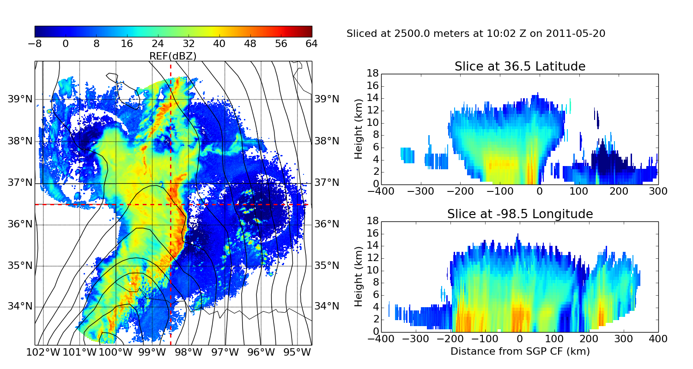

An example which creates a three-panel plot of a gridded NEXRAD radar on a map with latitude and longitude slices of the reflectivity. The NCEP North American regional reanalysis (NARR) pressure is plotted on top of the grid.
Python source code: plot_grid_three_panel.py
print __doc__
# Author Jonathan J. Helmus
# License: BSD 3 clause
import numpy as np
import matplotlib
import matplotlib.pyplot as plt
from netCDF4 import num2date, date2num, Dataset
import pyart
# read in the NEXRAD data, create the display
fname = '20110520100000_nex_3d.nc'
grid = pyart.io.grid.read_grid(fname)
display = pyart.graph.GridMapDisplay(grid)
# create the figure
font = {'size': 16}
matplotlib.rc('font', **font)
fig = plt.figure(figsize=[15, 8])
# panel sizes
map_panel_axes = [0.05, 0.05, .4, .80]
x_cut_panel_axes = [0.55, 0.10, .4, .30]
y_cut_panel_axes = [0.55, 0.50, .4, .30]
colorbar_panel_axes = [0.05, 0.90, .4, .03]
# parameters
level = 5
vmin = -8
vmax = 64
lat = 36.5
lon = -98.5
# panel 1, basemap, radar reflectivity and NARR overlay
ax1 = fig.add_axes(map_panel_axes)
display.plot_basemap()
display.plot_grid('REF', level=level, vmin=vmin, vmax=vmax)
display.plot_crosshairs(lon=lon, lat=lat)
# fetch NCEP NARR data
grid_time = display.grid.axes['time']
grid_date = num2date(grid_time['data'], grid_time['units'])[0]
y_m_d = grid_date.strftime('%Y%m%d')
y_m = grid_date.strftime('%Y%m')
url = ('http://nomads.ncdc.noaa.gov/dods/NCEP_NARR_DAILY/' + y_m + '/' +
y_m_d + '/narr-a_221_' + y_m_d + '_0000_000')
data = Dataset(url)
# extract data at correct time
data_time = data.variables['time']
t_idx = abs(data_time[:] - date2num(grid_date, data_time.units)).argmin()
prmsl = 0.01 * data.variables['prmsl'][t_idx]
# plot the reanalysis on the basemap
lons, lats = np.meshgrid(data.variables['lon'], data.variables['lat'][:])
x, y = display.basemap(lons, lats)
clevs = np.arange(900, 1100., 1.)
display.basemap.contour(x, y, prmsl, clevs, colors='k', linewidths=1.)
# colorbar
cbax = fig.add_axes(colorbar_panel_axes)
display.plot_colorbar()
# panel 2, longitude slice.
ax2 = fig.add_axes(x_cut_panel_axes)
display.plot_longitude_slice('REF', lon=lon, lat=lat)
ax2.set_xlabel('Distance from SGP CF (km)')
# panel 3, latitude slice
ax3 = fig.add_axes(y_cut_panel_axes)
display.plot_latitude_slice('REF', lon=lon, lat=lat)
# add a title
slc_height = grid.axes['z_disp']['data'][level]
dts = num2date(grid.axes['time']['data'], grid.axes['time']['units'])
datestr = dts[0].strftime('%H:%M Z on %Y-%m-%d')
title = 'Sliced at ' + str(slc_height) + ' meters at ' + datestr
fig.text(0.5, 0.9, title)
plt.show()
Total running time of the example: 9.07 seconds